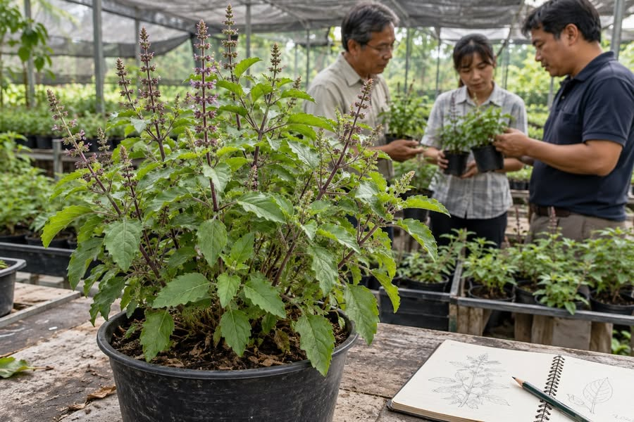

กะเพราพันธุ์ใหม่ ทำไมเอกชนจึงมาทำวิจัยกับมหาวิทยาลัย


เรื่องกะเพราพันธุ์ใหม่ทำให้ผมอยากชวนคิดถึงเหตุผลที่ เอกชนมาทำวิจัยกับมหาวิทยาลัย บริษัทที่มีเงิน คน และเครื่องมือ ย่อมมีทางเลือกทั้งพัฒนาเทคโนโลยีเองและซื้อเทคโนโลยีที่มีขาย หากงานทำได้ง่าย ความเสี่ยงต่ำ และเห็นผลตอบแทนชัด บริษัทก็อาจทำเองได้โดยไม่ต้องรอมหาวิทยาลัย
เหตุผลหนึ่งที่บริษัทมาหามหาวิทยาลัยคือ โจทย์มีมูลค่า แต่ยากและเสี่ยง เทคโนโลยีอาจยังไม่นิ่ง ต้องใช้ความรู้ใหม่ หรือมีต้นทุนสูงหากต้องตั้งทีมทำเองทั้งหมด โจทย์เหล่านี้เปิดโอกาสให้มหาวิทยาลัยสร้างความรู้ พร้อมกับมีผู้รอนำผลไปใช้จริง
โจทย์ยากเป็นพื้นที่ฝึกนักวิจัยและสะสมความรู้
มหาวิทยาลัยมีหน้าที่ทำวิจัยและ ผลิตนักวิจัย อยู่แล้ว แม้ไม่มีบริษัทมาจ้าง ก็ต้องมีโจทย์ให้นิสิตฝึกตั้งคำถาม ทดลอง และแก้ปัญหา ภายใต้การดูแลของอาจารย์ การทำงานกับโจทย์จริงจากภาคเอกชนจึงเชื่อมการเรียนรู้เข้ากับความต้องการใช้เทคโนโลยีได้
งานบางชิ้นอาจยังไม่มีคนนำไปใช้และถูกเรียกว่าขึ้น “หิ้ง” แต่ระหว่างทางมหาวิทยาลัยอาจได้พัฒนาคนและสะสมความรู้ไว้แล้ว หากมีผู้นำผลงานไปใช้ได้ด้วย ก็เป็นประโยชน์เพิ่มจากสิ่งที่เกิดขึ้นในกระบวนการวิจัย
ความร่วมมือต้องตกลงต้นทุน เวลา และสิทธิให้ชัด
การวิจัยร่วมกันช่วยให้บริษัทไม่ต้องสร้างทีมและองค์ความรู้ทั้งหมดตั้งแต่ต้น มหาวิทยาลัยมีอาจารย์ที่มีประสบการณ์ เครื่องมือ และนิสิตที่กำลังเรียนรู้ผ่านการทำงาน บริษัทได้ร่วมพัฒนาเทคโนโลยีที่ต้องการ นิสิตได้ฝึกกับโจทย์จริง ส่วนมหาวิทยาลัยได้ทั้งความรู้และบุคลากร
งานวิจัยยังมีโอกาส ไม่สำเร็จตามที่หวัง ทุกฝ่ายจึงต้องตกลงกันให้ชัดเรื่องต้นทุน เวลา และสิทธิในผลงาน ความเสี่ยงเป็นส่วนหนึ่งของการสร้างของใหม่ และต้องถูกนำมาพิจารณาตั้งแต่จัดความร่วมมือ
สนับสนุนความร่วมมือให้สร้างคนและเทคโนโลยีต่อได้
ผมอยากให้รัฐบาลสนับสนุนบริษัทให้ลงทุนวิจัยร่วมกับมหาวิทยาลัยมากขึ้น โดยมี โจทย์จริง งบจริง และโอกาสใช้ผลงานจริง นักเรียนจะได้เห็นเส้นทางอาชีพนักวิจัยและความต้องการความสามารถของตน ขณะที่ประเทศมีโอกาสพัฒนาเทคโนโลยีของตัวเองเพิ่มขึ้น
ในกรณีกะเพราพันธุ์ใหม่ บริษัทอาจได้ผลผลิตที่ต้องการ ส่วนมหาวิทยาลัยควรได้คนที่ทำวิจัยเป็น ความรู้ที่ต่อยอดได้ และความสามารถที่จะพัฒนาพันธุ์ถัดไป การจัดความร่วมมือจึงควรคำนึงถึง ความสามารถที่คงอยู่หลังจบโครงการ ควบคู่กับผลงานที่ส่งมอบ